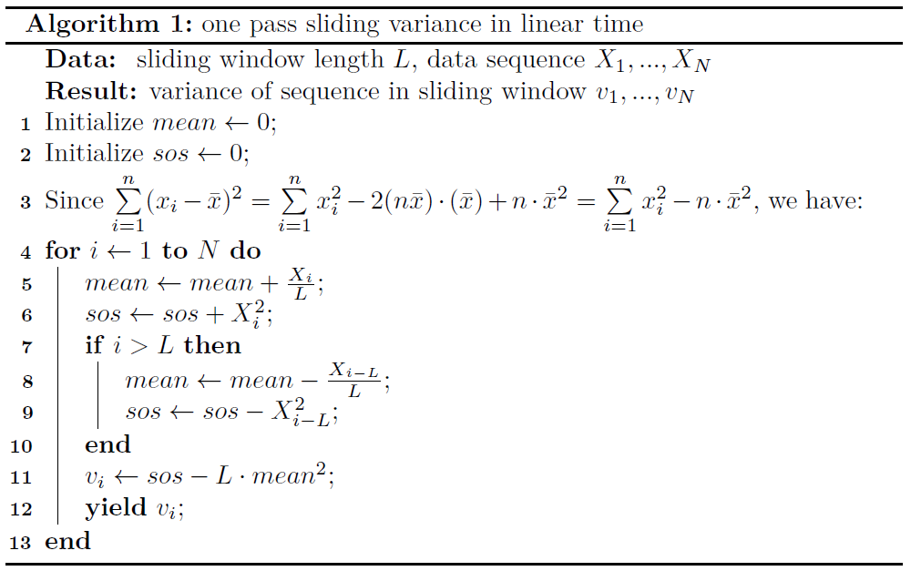

滑窗计算方差¶
1. 算法场景¶
给定一个时间序列 \(X(t)=\{x_1,x_2,...,x_i,...\}\)，时刻 \(t_i\) 对应的值为 \(x_i\)， 我们需要以窗长为 \(n\)、步长为 1 进行滑窗计算该窗内时间序列的方差，也就是在每个时刻 \(t_i\) 输出最近 \(n\) 个值的方差， 并且尽量减少线程阻塞的可能。
2. 问题分析¶
我们先从一个简单情况入手，对于一个时间序列 \(\{x_1,x_2,...,x_n\}\) ，求这 \(n\) 个值的方差。 根据方差公式：
在时间点\(t_n\)处使用该公式即可。 在每个时间点上平均计算次数如下：
t1 |
t2 |
... |
tn-1 |
tn |
|
|---|---|---|---|---|---|
平均操作次数 |
0 |
0 |
... |
0 |
O(n) |
状态 |
idle |
idle |
... |
idle |
busy |
可见整个计算过程主要的时间花费在最后一帧，当 \(n\) 比较大时，容易造成线程阻塞。 如果我们能将公式进行拆分重组，将计算过程分摊给每一帧，则会降低线程阻塞的风险。 事实上，我们有：
于是，方差的计算可以按时间进行分配，每一帧仅更新 \(\sum\limits_{i=1}^n x_i^2\) 和 \(\bar{x}\) 即可。 分别用 \(S\) 和 \(s\) 更新两者，具体如下：
t1 |
t2 |
... |
tn-1 |
tn |
|
|---|---|---|---|---|---|
\(s=0\) |
\(s=s+x_1\) |
\(s=s+x_2\) |
... |
\(s=s+x_{n-1}\) |
\(s=s+x_n\) |
\(S=0\) |
\(S=S+x_1^2\) |
\(S=S+x_2^2\) |
... |
\(S=S+x_{n-1}^2\) |
\(S=S+x_n^2\) |
平均操作次数 |
O(1) |
O(1) |
... |
O(1) |
O(1) |
最终所求方差则为
回到原问题，当我们需要滑窗求时间序列的方差时，也只需要不断更新 \(S\) 和 \(s\) 即可， 每一帧更新只需要O(1)的时间复杂度，和O(1)的空间复杂度。
3. 算法复杂度¶
Time Complexity per frame on average: O(1)
Space Complexity per frame on average: O(1)
4. 代码¶
python
1def calc_sliding_var(x: list, k: int):
2 S = s = 0
3 n = len(x)
4 for i in range(n):
5 s += x[i]
6 S += x[i] ** 2
7 if i >= k:
8 s -= x[i-k]
9 S -= x[i-k]**2
10 yield (S - s**2) / n
5. 附录¶

滑窗计算方差伪代码¶